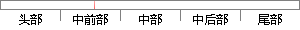

化学气相沉积法制备石墨烯的
片段位置图

相似结果
相似片段：
修改和改变，都落入本发明的保护范围。 Patent Citations Cited Patent Filing date Publication date Applicant Title CN101285175A * 29 May 2008 15 Oct 2008 中国科学院化学研究所 化学气相沉积法制备石墨烯的方法 CN101289181A * 29 May 2008 22 Oct 2008 中国科学院化学研究所 掺杂石墨烯及其制备方法 US20100021708 * 28 Jan 2010 Massachusetts Institute Of Technology Large-Area Single- a
| 对比库： | WriteCheck云资源库 |
| 来源： | google.com.na 查看来源 |
| 发布时间： | 2016-09-11 |
| 相似率 | 100% （严重抄袭） |